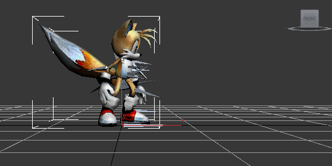
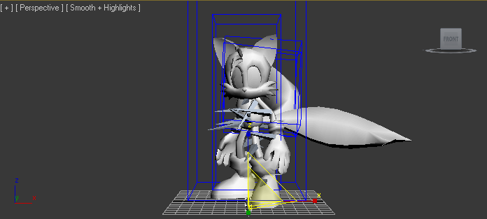

Open your virtual machine via VMWare workstation. You will need to copy the following files onto your virtual machine: the PSK file you exported earlier, the PSA file you exported earlier, and any image files from the texture data you exported earlier. In this example there is only one image file. The easiest way to do this is to put all those files in a folder. Then click and drag the folder onto VMWare workstation’s desktop.
The following steps assume a basic knowledge of 3DSmax’s interface. Tutorials containing such knowledge are readily available online and in 3DSmax’s built in help menu.
To import the model and animation into 3DSmax, Start 3DS max. When notified about the days remaining in your free trial, click “Try”. Navigate to the Maxscript interface and run the “ActorXImpoter.ms” max script. Scroll down to the “Path to Materials” setting and Click the “…” and choose the path containing your texture data. Click “Import PSK” and open your PSK file. The model should display in the viewport. If your model displays with a dull grey texture instead of the textures it should normally have, your texture path is incorrect. Click “Import PSA” and open the PSA file. Click “Load Track”. The model should change poses to the first frame of its first animation. Below this paragraph is a picture of how the model used in this tutorial should look, though the angle may be different depending on your camera settings.

Next, open the material editor and import the material your model uses from the Material and Map Browser. If your model uses more than 1 texture in its material, you will need to combine them into a single texture file using an unwrap UVW modifier and the render to texture feature before proceeding. Create a new Starcraft 2 Standard Material. Assign the single texture file your model (now) uses to the “diffuse” slot in the material editor. Then assign the material to your model's mesh. Your model will turn white in the viewer if you've done this correctly.
Creating hitboxes comes next. To do this, merge in the provided "Hitboxes.max" file. You will need to scale your model so its roughly within the rectangles from Hitboxes.max. For most super smash bros models you can do this by selecting the TOPN bone of your model’s skeleton and rotating it by -90 degrees on the Z axis so the model is facing the front of the viewport. Then scalig it up by a factor of 10. Below is a picture for reference.

The next step is adding attachment points. To add attachment points to your model, first go to “sc2artools” menu, which is right next to the “help” menu. From there click Helpers -> Add Base Attachment Points. This will create 3 attachment points in your scene. Next you will need to link these to your model’s skeleton. This will cause each attachment point to move with the bone you specify, which is referred to as a parent to your attachment point.
To do this, first edit the position and rotation data of each attachment point to be in the desired position relative to the bone you wish to use as its parent. Normally and in all cases of this example this will be the exact same position and rotation as the parent. However, it doesn’t have to be. Then use the link selection tool. Be sure to switch tools from the link selection to any other tool after you finish linking or you may end up linking the wrong objects together.
Ref_Origin should be linked to the root bone, which in most MDL0s is called “TopN” and be positioned at 0,0,0. “Ref_Overhead” should be also be linked to the root bone but be positioned above the model’s head. Ref_Center and Ref_Target are a matter of personal choice, but usually they correspond to a bone in the model’s center or chest. If you wish to add additional attachment points, you can do so by cloning an existing attachment point, unlinking it, renaming it to the desired attachment point name, positioning it as desired, and parenting it to the desired bone.
Naturally your model will need animation names To assign animation names to your model, first go to the sc2artools menu and click on animation -> animation props floater. Next, click “new” and select the StarCraft 2 name of your first animation from the dropdown menu. In this case our first animation is “Stand”.
For the start and end times of your first animation, you will usually want to enter “1” and the length of your first animation -1, since this window won’t let you start at frame 0. (You can check an animation’s length using Brawlbox by highlighting your animation’s name in the motion file, and looking at the frame count field). Next, edit the start and end values until they contain only your desired animation frames, you can include frame 0 using these as needed. You can preview the animation to ensure it’s correct using 3DSmax’s play animation button on the lower left of the screen. When you are satisfied with your first animation, click “new” again and enter the name, start time, and length for your next animation. Adjust the start and end times as desired and repeat until all your animations have names.
To export the model in M3 format, Click s2arttools-> export->export floater. Check the box that says “Use Mopaq Paths”, then click export and save your M3 file. Before you can use your model, you will need to convert the texture you used to dds format using your desired image editing program. In most cases including if your using paint.net the "save as" menu will suffice.
Next: Using your Model in a Starcraft 2 map/modReturn to Index